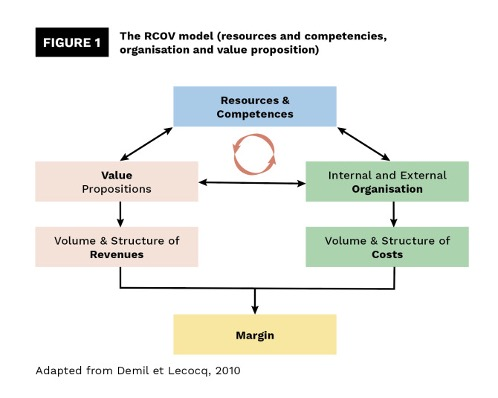
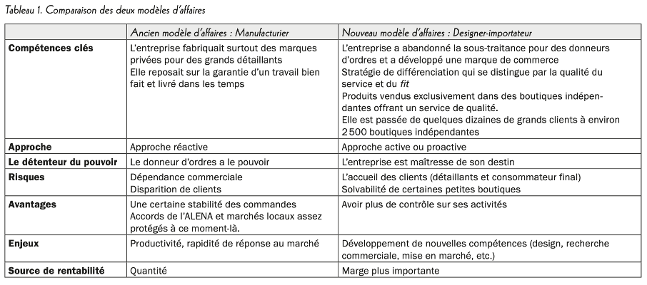

Changement de business model : les dynamiques et obstacles derrière cet exercice
- MON
- 2024-2025
- temps 1
- Charles Cook
Ce MON reprend les bases de ce qu'est un business model, et explique pourquoi cette notion est stratégique pour les entreprises afin de rester compétitives
Aucun prérequis
- Xerfi Canal. (2022, 2 mars). Le business model au cœur de la réflexion stratégique [Pierre-Jean Benghozi]
- Xerfi Canal. (2019, 8 avril). Comment rafraîchir ou réinventer son business model ? [Hélène Chanut-Musikas]
- La servicisation des entreprises industrielles, Un changement majeur de business model, Par Sophie Peillon
- Transformation d’un modèle d’affaires dans un contexte de mondialisation :le cas d’une entreprise de vêtements, Par Naoufel Remili
- Robert, I., & Herbert, M. (s. d.). Un business model qui encouragerait à consommer moins de vêtements est-il possible ? The Conversation.
Table des matières
- Introduction
- Business model : définition, modèle, dynamique
- Définition
- Modèle RCOV
- Le business model au centre des réflexions stratégiques
- La servicisation, un exemple d’évolution du business model
- Notion et définition
- Logiques dominantes
- Évolution du business model : on décortique
- Qu’est-ce qui déclenche un tel processus ?
- Vecteurs de réussites
- Étude de cas : entreprise québécoise de mode féminine : Keystone
- Le contexte
- Obstacles de direction
- Le nouveau business model de Keystone
- Simple évolution ou transformation du business model ?
- Un business model tendant vers la décroissance : possible ?
- Business model sobre activiste
- Business model sobre de produire moins
- Business model écosystémique territorial
- Business model sobre “do it yourself”
- Conclusion
Introduction
Dans un contexte économique en constante évolution, les entreprises doivent s'adapter pour survivre et prospérer. Le changement de business model est souvent une réponse stratégique à des bouleversements majeurs tels que l'essor des nouvelles technologies, les mutations des attentes des consommateurs, ou encore la pression concurrentielle accrue. Ce processus complexe consiste à revoir en profondeur la manière dont une organisation crée, distribue et capture de la valeur. Adopter un nouveau modèle économique peut constituer une opportunité cruciale pour repositionner une entreprise sur le marché, améliorer ses revenus ou anticiper des tendances futures. Cependant, la mutation de business model n’est pas sans risque car elle implique une réorganisation interne, la mobilisation des ressources, et une prise de décision audacieuse face à l’incertitude. Quelles sont les dynamiques derrières le changement de business model d’une entreprise ?
Business model : définition, modèle, dynamique
Définition
Selon Le Robert, un business model peut se définir comme suit :
Représentation synthétique des aspects majeurs de l’activité d’une entreprise ou d’une organisation.
On peut également parler de modèle économique. De manière plus simple, un business model (ou modèle économique), est le choix que fais une organisation pour générer des revenus.
Modèle RCOV
B. DEMIL et X. LECOCQ définissent un modèle économique au travers d’une vision dynamique, avec l’existence de 3 blocs clés :
- Ressources et Compétences (RC)
- Structure Organisationnelle (O)
- Proposition de valeur (V)
 europeanbusinessreview.com
Ainsi, à partir des ressources et compétences qu’une organisation contrôle, l’entreprise définit donc une ou plusieurs propositions de valeur pour ses clients qui vont lui permettre de générer des revenus. Ces ressources et compétences peuvent être internes, développées par l’entreprise, mais également d’origine extérieure (dans ce cas, les ressources et compétences sont acquises sur le marché).
Proposition de valeur : déclaration qui décrit les avantages que l’entreprise offre à ses clients par rapport aux produits et services proposés par la concurrence.
Les propositions de valeurs sont portées par une organisation interne (chaîne de valeur) mais également externes (partenaires), ce qui engendre inévitablement des coûts de support. La structure organisationnelle comprend ainsi les activités réalisées au sein de l’entreprise mais également les relations établies avec d’autres organisations.
Ainsi, les choix réalisés par une organisation en termes de ressources/compétences, structure organisationnelle et propositions de valeur vont déterminer les coûts et revenus de l’organisation, et ainsi la marge effectuée par celle-ci.
L’approche RCOV est intéressante dans le cas de notre étude sur les changements / mutations de business model car elle ne considère pas uniquement ces 3 blocs clés mais également les relations qui les connectent. C’est pourquoi on peut parler de modèle dynamique car les blocs sont en interaction permanente. Ainsi, une modification sur l’un des blocs va inévitablement générer des modifications sur les autres blocs. Ce modèle permet de mettre en lumière un des risques du changement de modèle économique, qu’il faut savoir éviter en anticipant au maximum l’impact que va avoir un changement de proposition de valeur par exemple sur la structure organisationnelle et les ressources et compétences.
Le business model au centre des réflexions stratégiques
On remarque que la notion de business model est revenu sur le devant de la scène avec l’émergence des technologies de l’information, de la communication et du numérique. En effet ces technologies flexibles ont permis une redéfinition simple et rapide des produits et services, permettant ainsi à certaines entreprises de se réinventer. Le changement de modèle économique est donc un besoin auquel sont confrontées de nombreuses organisations. Cela ne signifie pas forcément changer fondamentalement la proposition de valeur, mais aussi la manière avec laquelle on produit cette proposition de valeur.
Netflix est un exemple de cette idée : la proposition de valeur de l’organisation n’a pas fondamentalement changé, il s’agit toujours de mettre à disposition du client des films et séries, mais la manière de faire a été modifiée. On passe d’un système de location de DVD à un système d’abonnement et de téléchargement en streaming.
La servicisation, un exemple d’évolution du business model
Notion et définition
La servicisation est un terme qui apparait à la fin des années 1980, dans les travaux de S. VANDEMERWE et J. RADA. Ce terme désigne alors le mouvement de nombreuses entreprises manufacturières qui passent d’une proposition de valeur centrée sur le produit, le bien, à une proposition de valeur comprenant également des services et se centrant également sur le client.
Ainsi, on peut définir la servicisation comme la transition de l’entreprise manufacturière de la vente de produits vers la vente de systèmes produits-services (PSS).
Système produit-service (PSS) : ensemble commercialisable de produits et de services capables de remplir parfaitement les besoins d’un utilisateur. Le PSS est fourni soit par une seule organisation, soit par une alliance d’entreprises et peut contenir qu’un seul produit, ou plusieurs, ainsi que des services supplémentaires. Il peut également lier un produit et un service supplémentaire.
La servicisation est donc l’innovation des capacités et des processus d’une organisation afin de mieux créer de la valeur mutuelle.
Michelin par exemple, en une dizaine d’années, est passé d’un business modèle de vente de pneu à une business modèle de vente de kilomètres, comprenant ainsi la vente du pneu, mais également tout l’entretient de celui-ci au cours de sa vie. Michelin a donc su passer d’un business model centré uniquement sur la vente de son produit : le pneu, à un modèle économique plaçant le client au centre, et en incorporant ainsi des services dans sa proposition de valeur afin de capitaliser sur la relation client.
La servicisation d’entreprises manufacturières comme Michelin constituent un changement majeur dans leur business model, modifiant parfois de manière radicale la proposition de valeur, mais également les ressources et compétences, l’organisation de l’entreprises et de ce fait le flux de revenus et la structure de coûts.
Logiques dominantes
Il a été évoqué précédemment que la servicisation est l’incorporation d’offres de services à une proposition de valeur centrée sur le bien. On peut donc illustrer le processus de servicisation à l’aide de deux logiques :
- La logique dominante du produit / bien : dans cette logique, les services ne constituent qu’un élément intangible additionnel permettent ainsi à l’entreprise d’augmenter la valeur du bien qu’elle propose.
- La logique dominante du service : dans cette logique, contrairement à précédemment, le service est au cœur de l’échange, sans faire référence particulièrement aux biens qui peuvent l’accompagner.
La servicisation est alors le passage de la logique dominante du produit / service à une logique dominante du service. On remarque que la servicisation comprend donc une évolution dans l’appréhension de la relation client pour l’organisation, car les entreprises servicisées sont centrées sur le client, ce qui n’est pas forcément le cas pour les entreprises manufacturières dites « classiques ».
Évolution du business model : on décortique
Qu’est-ce qui déclenche un tel processus ?
Le changement de business model est probablement l’un des défis les plus importants pour les entreprises actuelles. En effet dans un contexte très changeants, faisant face à la concurrence et à des évolutions imprévisibles et rapides au sein des différents marchés dans lesquelles elles évoluent, notamment à cause de la mondialisation, les organisations ont des choix stratégiques à faire afin de rester compétitives et rentables.
Cependant, faire évoluer son business model n’est pas sans risques et contraintes. En effet nous pouvons déjà noter qu’il est plus difficile de faire évoluer le business model d’une organisation déjà existante que pour une « nouvelle arrivante ». Parmi les freins à une telle évolution du business model, nous pouvons citer l’inertie organisationnelle ou encore la rupture avec les pratiques usuelles et la création de son propre espace concurrentielle. De plus, selon le degré de changement que souhaite apporter l’entreprise à son modèle économique, l’exercice peut alors être très complexe. En effet plus le nombre de composant touché est élevé, plus on se rapproche de la compétence centrale ou des valeurs profondes de l’organisation. Il faut également savoir réaliser cet exercice au bon moment, car de par les multiples contraintes qui existent, il est difficile de répéter un le processus d’évolution de business model fréquemment.
Les questions principales qu’une entreprise doit donc se poser avant d’entamer un exercice d’évolution de son modèle économique sont les suivantes :
- Quels sont les éléments qui font le succès du business model actuel ?
- Quels sont les potentiels signaux qui appellent à la refonte du business model ? (Nouvelles règlementations, nouveaux compétiteurs, nouvelles technologies, évolutions du marché,…)
- Est-il pertinent de reconfigurer le business model de l’organisation ?
Au travers de ces trois questions principales, il est possible de juger de la nécessité ou non de modifier le modèle économique d’une entreprise.
Vecteurs de réussites
Dans la littérature, trois vecteurs de réussites sont identifiés afin de permettre le succès d’une évolution de modèle économique. Ces vecteurs de réussite sont les suivants :
- Dimension cognitive : ensemble des schémas mentaux et des perceptions des acteurs qui influencent leur prise de décision, leur capacité d'innovation, et la transformation de leur modèle d'affaires
- Expérimentation stratégique : pratique consistant à tester différentes idées, concepts ou approches avant de les adopter de manière définitive dans une stratégie d'affaires. Plutôt que de baser les décisions uniquement sur des analyses théoriques ou des hypothèses, l'expérimentation stratégique encourage à essayer concrètement des innovations ou des modifications dans le modèle d'affaires pour voir ce qui fonctionne.
- Nécessité de balance entre exploration et exploitation : Le "balancier" entre exploration et exploitation est crucial, car une entreprise qui se concentre uniquement sur l'exploitation risque de devenir obsolète face aux changements du marché, tandis qu'une focalisation excessive sur l'exploration peut dilapider ses ressources sans bénéfices immédiats. Le succès réside dans la capacité à équilibrer ces deux dynamiques : exploiter efficacement ce qui fonctionne tout en explorant activement de nouvelles possibilités pour se préparer aux futurs défis et opportunités.
Étude de cas : entreprise québécoise de mode féminine : Keystone
Keystone est une entreprise familiale fondée en 1908. A ses débuts, Keystone est spécialisée dans la fabrication de vêtements de travail et de jeans. Comme de nombreuses entreprises dans le secteur vestimentaire au début des années 2000, Keystone est confrontée aux problématiques liées à l’ouverture des marchés, entrainant ainsi une évolution dans son business model en passant d’un modèle économique manufacturier à un modèle économique de designer-importateur.
Le contexte
Le contexte est très important dans la prise de décision d’évolution du business model de Keystone. Ainsi, comme nous l’avons évoqué précédemment, des questions importantes sont à se poser avant de décider d’entamer un tel processus.
Le succès du modèle économique est basé sur une réputation sans tâche de Keystone auprès de ses acheteurs. En effet l’entreprise a toujours su miser sur la création de relations client de confiance en mettant l’accent sur une communication continue, la qualité et les coûts de ses produits, et les délais de livraison.
Un certain nombre de signaux appelant à une refonte du business model étaient également clairement identifiables : la faillite d’Eaton ou encore Dylex dans les années 2001-2002, qui étaient deux grands clients l’entreprise. On peut également évoquer la fusion acquisition d’Addition-Elle par Reitmans qui mène à la perte d’un nouveau grand client pour Keystone car Reitmans gère son propre programme d’importation. Il ne faut pas oublier non-plus, comme nous l’avons dit dans l’introduction, que nous sommes dans un contexte d’ouverture des marchés au Canada dans ces années, avec une abolition des limites d’importation (quotas et tarifs), notamment parmi les 48 pays les plus pauvres de la planète, comme le Bengladesh par exemple qui possède une solide industrie textile.
Enfin, la pertinence de reconfigurer le modèle économique de Keystone est illustré par l’asymétrie de pouvoir. En effet les premières vagues d’importation ont levé un voile sur les différences de coûts très importantes avec certains pays offrant des salaires dérisoires. Cette différence est d’autant plus importante que lorsque l’on travaille pour des marques distributeurs, il y a moins de place pour la valeur ajoutée et la structure de coût est dominée les dépenses liées à la main d’œuvre. En travaillant pour de grandes compagnie, Keystone avait donc la certitude de ne pas être « maître de son destin » en gardant le même business model, et trop dépendre de ses donneurs d’ordre.
Obstacles de direction
Keystone a rencontré des obstacles « idéologiques » au sein de la direction au moment de changer de business model. En effet il y a 3 actionnaires principaux, mais deux d’entre eux ne souhaitent pas investir les bénéfices de l’entreprise dans les employés, la technologie et la création de leur propre marque. On assiste à un désaccord sur la direction de l’entreprise. Il faut donc attendre que les parts de ces deux actionnaires soient rachetées par le troisième afin de démarrer l’exercice d’évolution du business model.
Le nouveau business model de Keystone
L’objectif principal du changement de business model effectué par le dirigeant de Keystone est donc d’avoir un certain contrôle sur ses activités et être maître de son destin. Il a donc développé une vision stratégique externe et une vision stratégique interne qui sont les suivantes :
- Vision stratégique externe : développement d’une marque de commerce forte avec une proposition de valeur intrinsèque offerte à la clientèle cible.
- Vision stratégique interne : identifier les leviers qui vont permettre à l’entreprise de transformer cette proposition de valeur en produits concrets.
On peut donc comparer les deux modèles économiques de l’entreprise grâce au tableau suivant :  Transformation d’un modèle d’affaires dans un contexte de mondialisation :le cas d’une entreprise de vêtements, Par Naoufel Remili
Ce tableau illustre bien l’évolution du business model de Keystone, d’un modèle économique manufacturier où l’entreprise est au service d’autres entreprises en qualité de fournisseur, et est donc fortement dépendantes de l’évolution du marché et de la demande, à un modèle économique de designer-importateur dans lequel l’entreprise est maîtresse de son destin et peut contrôler ses propres compétences, ressources et activités. Ainsi, il y a eu une période de transition entre les deux modèles économiques, que l’on peut illustrer par exemple avec l’activité de l’usine chargée de la production locale de Keystone. En effet l’activité de l’usine a diminué sa production à partir des années 1990 jusqu’à son arrêt total en 2005. Dans le même temps, les quantités d’importations n’ont fait qu’augmenter.
Simple évolution ou transformation du business model ?
On peut se demander dans quelles mesure cette évolution constitue-t-elle une transformation de business model de Keystone. Comme nous l’avons évoqué plus haut, dans la description du modèle RCOV, un modèle économique peut-être décrit au travers de 4 composantes :
- Architecture de l’offre et des ressources mises en place : cela correspond à l’organisation des ressources et compétences (RC) mais également des processus internes pour créer, partager, distribuer et capter de la valeur.
- Proposition de valeur pour le client (V)
- Position de l’entreprise dans le réseau de valeur : cela correspond aux liens avec les partenaires internes ou externes afin de compléter les actifs manquants et rehausser le stock d’expertise (O).
- Modèle de revenu, soit la manière avec laquelle l’entreprise crée de la richesse, on rapproche ceci de la structure de coût.
Ainsi, au cours de l’évolution du modèle économique de Keystone, des changements ont été opéré sur chacun des 4 composantes citées ci-dessus, faisant également évoluer les relations entre chacune des composantes. Les quatre composantes du nouveau modèle Keystone sont résumées ci-dessous :
 Transformation d’un modèle d’affaires dans un contexte de mondialisation :le cas d’une entreprise de vêtements, Par Naoufel Remili
Transformation d’un modèle d’affaires dans un contexte de mondialisation :le cas d’une entreprise de vêtements, Par Naoufel Remili
Ainsi, de par les modifications de ces composantes, nous pouvons qualifier l’évolution dans les activités de Keystone de transformation de business model.
Un business model tendant vers la décroissance : possible ?
Dans l’étude de cas précédente, nous avons utilisé l’exemple de Keystone, qui est une entreprise textile. Or, le phénomène de fast-fashion est un fléau pour l’environnement. En effet la surconsommation de vêtement est à l’origine de 20% de la pollution des eaux et de 10% des émissions de CO2 par exemple. Pour remplir les objectifs de limitation du réchauffement climatique, il faudrait que chaque individu n’achète que 4 nouvelles pièces vestimentaires par an, alors que la moyenne française est 11 fois plus élevée, soit environ 34 pièces par an et par personne. Ainsi, il est intéressant de se pencher sur l’existence de business model qui suivent cette volonté de réduire l’impact de l’industrie textile sur l’environnement.
Business model sobre activiste
Ce modèle économique durable combine décroissance et sobriété, en influençant à la fois la production et la consommation. Trois critères clés le caractérisent :
- Éducation continue des consommateurs pour encourager à "moins consommer".
- Longévité accrue des produits.
- Activisme social et environnemental intense de la marque. La proposition de valeur se base sur la durabilité des produits tout en jouant un rôle de messager environnemental, informant sur l'impact écologique de la production et consommation. Ce modèle valorise le renoncement à l'achat, illustré par des marques comme Loom, qui incitent à consommer moins.
Business model sobre de produire moins
Ce second modèle se concentre sur une production agile, inspirée des principes de l'industrie 4.0, comme la production à la demande, avec l'objectif de réduire les stocks à zéro. Bien que la surconsommation ne soit pas directement abordée, le modèle encourage une réflexion avant l'achat en rendant visible le processus de fabrication, limitant ainsi les achats impulsifs. En remettant en question les codes de la fast fashion, il vise à réduire le gaspillage vestimentaire à toutes les étapes. L'exemple des "trois tricoteurs" de Roubaix résume bien cette approche : ne pas surproduire, ni surstocker, tout en valorisant la production locale.
Business model écosystémique territorial
Ce troisième modèle s'inscrit dans une démarche écosystémique, où la valeur est créée par des acteurs locaux en interaction. Il s'intègre dans des projets territoriaux et vise à reconstruire des filières locales comme le lin, le chanvre ou la laine. Sa sobriété repose sur l'offre limitée de matières premières locales, la collaboration dans la chaîne de valeur et une gouvernance démocratique. Il privilégie les circuits courts, reconnectant le consommateur au produit en expliquant les étapes de fabrication. Ce modèle favorise une durabilité affective et un attachement territorial, comme illustré par Laines paysannes, qui valorise le patrimoine local.
Business model sobre “do it yourself”
Ce dernier modèle se concentre sur le transfert de compétences, permettant aux consommateurs de fabriquer ou réparer eux-mêmes leurs vêtements, en lien avec des pratiques comme l'upcycling. Il valorise l'unicité et l'esthétisme, contribuant à un nouveau courant artistique. L'objectif principal est de donner aux consommateurs les compétences pour prolonger la vie des vêtements par la réparation ou la transformation. Comme le modèle écosystémique, il renforce le lien entre l'individu et le vêtement, tout en redéfinissant le consommateur comme créateur et réparateur, plutôt que simple acheteur dans une économie linéaire.
Ainsi, il était important au travers de ces 4 exemples de montrer qu’il existe des modèles économiques pouvant concilier rentabilité et respect de l’environnement. Ces modèles économiques sont aujourd’hui encore rares, mais l’existence d’organisations prônant ces valeurs sont un message d’espoir.
Conclusion
L’étude menée sur le business model et ses applications à l’entreprise Keystone met en lumière l’importance cruciale d’une bonne compréhension de ce concept dans le cadre de la gestion d’une organisation, dans un environnement toujours plus compétitif et changeant. Le business model génère et délivre de la valeur, est un levier stratégique essentiel pour assurer la viabilité et la compétitivité dans un marché en constante évolution. Au travers du modèle RCOV (Ressources, Compétences, Organisation et Valeur), nous avons vu comment les différents composants de ce modèle interagissent pour structurer l’activité économique d'une organisation. Les ressources tangibles et intangibles de l’entreprise, ses compétences uniques, son organisation interne ainsi que son approche de la création de valeur sont des piliers fondamentaux de son modèle d'affaires. En identifiant ces éléments, le modèle RCOV nous a permis de voir comment l'entreprise Keystone a su modifier chacun des piliers afin de renouveler son business model. La notion de servicisation fait référence à la transformation progressive des offres de produits en offres de services, un phénomène devenu clé dans de nombreux secteurs. Ainsi, nous avons vu au travers d'exemple comme Michelin par exemple, que l'ajout de services à l'offre proposée permet d'améliorer l'expérience client. Ainsi, ce MON montre que la compréhension et l’application des principes du business model, du modèle RCOV, et de la servicisation sont des facteurs clés de succès pour les entreprises cherchant à s’adapter et à prospérer dans un marché dynamique et changeant.